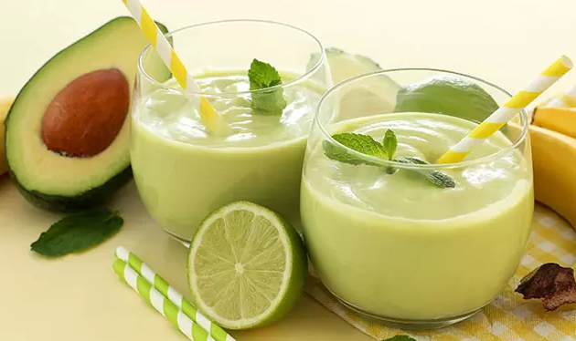
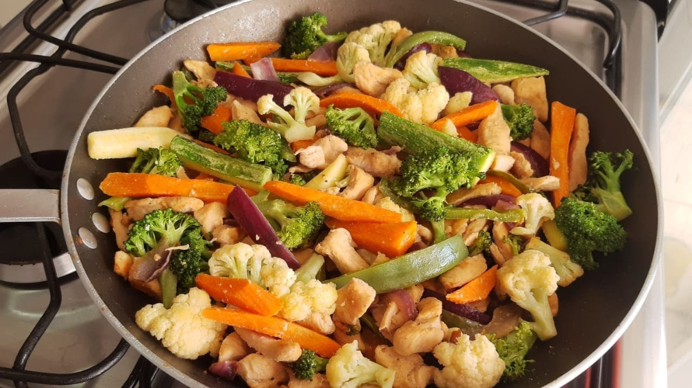

Quem somos?
Somos a food and physical health, um site feito para ajudar as pessoas a terem uma vida saudável através de sugestões para uma boa alimentação, receitas mais saudáveis e prática de exercícios físicos.
Estamos no mercado desde 2021, por isso estamos sempre antenados aos novos costumes alimentares. O nosso objetivo é proporcionar uma maneira de obter uma vida saudável de maneira gratuita.

sugestões de exercícios físicos

Rede social própria

Calculadora de calorias

Informação sobre doenças

Alimentação balanceada


Receitas saudáveis

Ver Receita
Suco Verde

Ver Receita
Suco de Abacate
